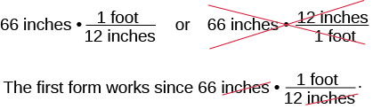
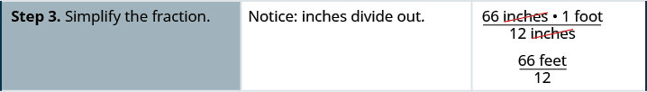
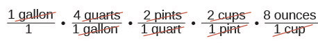
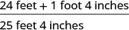
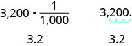
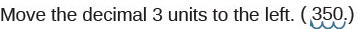
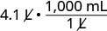
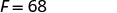
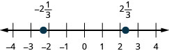

યુ.એસ. પદ્ધતિમાં એકમોનું રૂપાંતર કરો
| યુ.એસ. માપન પદ્ધતિ | |
|---|---|
ગુણાકાર માટે તટસ્થ સંખ્યાનો ગુણધર્મ

બે પદાવલીઓ છે: 66 ઇંચ·(1 ફૂટ)/(12 ઇંચ) અને 66 ઇંચ·(12 ઇંચ)/(1 ફૂટ). બીજી પદાવલી પર લાલ ચોકડી છે. નીચે પહેલી પદાવલી ફરી છે અને અંશ-છેદના ઇંચ લાલ રેખાથી છેદેલા છે; આ રૂપ કામ કરે છે.
એકમોનું રૂપાંતર કેવી રીતે કરવું
ઉકેલ

ત્રણ કૉલમના કોષ્ટકમાં પગલું 1 છે: “રૂપાંતર કરવાના માપનનો 1 સાથે ગુણાકાર કરો; આપેલા અને જોઈતા એકમોને જોડતા અપૂર્ણાંક તરીકે 1 લખો.” વચ્ચે સમજ છે: “66 ઇંચનો 1 સાથે ગુણાકાર કરો અને 1ને ઇંચ તથા ફૂટને જોડતા અપૂર્ણાંક તરીકે લખો. ઇંચ છેદાઈ જાય તે માટે છેદમાં ઇંચ જોઈએ!” જમણે 66 ઇંચ·1 અને 66 ઇંચ·(1 ફૂટ)/(12 ઇંચ) છે.

આગળ “પગલું 2. ગુણાકાર કરો.” સૂચના છે. મદદરૂપ નોંધ કહે છે: “66 ઇંચને 66 ઇંચ/1 ગણો.” ગણતરી (66 ઇંચ × 1 ફૂટ)/(12 ઇંચ) છે.

આગળ “પગલું 3. અપૂર્ણાંકનું સાદું રૂપ આપો.” સૂચના છે. નોંધ કહે છે: “ઇંચ છેદાઈ જાય છે.” પરિણામ 66 ફૂટ/12 છે.
છેલ્લે “પગલું 4. સાદું રૂપ આપો.” અને “66ને 12 વડે ભાગો.” લખ્યું છે. અંતિમ પરિણામ 5.5 ફૂટ છે.
એકમોનું રૂપાંતર કરો.
- રૂપાંતર કરવાના માપનનો 1 સાથે ગુણાકાર કરો; આપેલા અને જોઈતા એકમોને જોડતા અપૂર્ણાંક તરીકે 1 લખો.
- ગુણાકાર કરો.
- અપૂર્ણાંકનું સાદું રૂપ આપો.
- સાદું રૂપ આપો.
ઉકેલ
| રૂપાંતર કરવાના માપનનો 1 સાથે ગુણાકાર કરો. | |
| 1ને ટન અને પાઉન્ડને જોડતા અપૂર્ણાંક તરીકે લખો. | |
| સાદું રૂપ આપો. |  એકમ-રૂપાંતરની પદાવલીમાં 3.2 ટનનો (2,000 પાઉન્ડ)/(1 ટન) સાથે ગુણાકાર છે. 3.2 ટનને પાઉન્ડમાં ફેરવવા ટનના બંને એકમ છેદેલા છે. |
| ગુણાકાર કરો. | |
| ન્ડુલાનું વજન લગભગ 6,400 પાઉન્ડ છે. |
ઉકેલ
| 9 અઠવાડિયાં. | |
| સંખ્યા ને નીચે પ્રમાણે લખો: , , અને . | |
| સામાન્ય એકમો છેદી નાખો. |  પરિમાણીય વિશ્લેષણથી 9 અઠવાડિયાંને મિનિટમાં ફેરવ્યું છે. અપૂર્ણાંકોની શ્રેણીમાં અઠવાડિયાંને દિવસમાં, દિવસને કલાકમાં અને કલાકને મિનિટમાં ફેરવતાં દરેક પગલે એકમો છેદી નાખ્યા છે. |
| ગુણાકાર કરો. | |
| ગુણાકાર કરો. |
ઉકેલ
| 1 ગૅલન | |
| રૂપાંતર કરવાના માપનનો 1 સાથે ગુણાકાર કરો. | |
| સાચો એકમ મળે એવા રૂપાંતર અવયવો વાપરો. સાદું રૂપ આપો. |
 પરિમાણીય વિશ્લેષણથી 1 ગૅલનને ઔંસમાં ફેરવવા ક્વૉર્ટ, પિન્ટ, કપ અને ઔંસના ગુણાકાર અવયવો વાપર્યા છે અને એકમો છેદી નાખ્યા છે. |
| ગુણાકાર કરો. | |
| સાદું રૂપ આપો. | . 1 ગૅલનમાં 128 પ્રવાહી ઔંસ હોય છે. |
યુ.એસ. પદ્ધતિમાં માપનના મિશ્ર એકમો વાપરો
ઉકેલ
| ઔંસ ઉમેરો. પછી પાઉન્ડ ઉમેરો. |  ઊભા સરવાળામાં 14 ઔંસ, 1 પાઉન્ડ 2 ઔંસ અને 1 પાઉન્ડ 6 ઔંસનો સરવાળો 2 પાઉન્ડ 22 ઔંસ બતાવ્યો છે. 3 પાઉન્ડ 6 ઔંસમાં રૂપાંતર આ આકૃતિમાં નથી. |
| 22 ઔંસને પાઉન્ડ અને ઔંસમાં ફેરવો. | 2 પાઉન્ડ + 1 પાઉન્ડ 6 ઔંસ |
| પાઉન્ડ ઉમેરો. | 3 પાઉન્ડ 6 ઔંસ |
| સીમોરે 3 પાઉન્ડ 6 ઔંસ સ્ટેક ખરીદ્યાં. |
ઉકેલ
| ઇંચનો અને પછી ફૂટનો ગુણાકાર કરો. |  મિશ્ર માપનના ગુણાકારમાં 6 ફૂટ 4 ઇંચ ગુણ્યા 4નું પરિણામ 24 ફૂટ 16 ઇંચ છે. |
| 16 ઇંચને ફૂટમાં ફેરવો. ફૂટ ઉમેરો. |
 યુ.એસ. એકમોના સરવાળામાં 24 ફૂટ + 1 ફૂટ 4 ઇંચ = 25 ફૂટ 4 ઇંચ છે. |
| ઍન્થનીએ 25 ફૂટ 4 ઇંચ લાકડું ખરીદ્યું. |
મેટ્રિક પદ્ધતિમાં એકમોનું રૂપાંતર કરો
| મેટ્રિક માપન પદ્ધતિ | ||
|---|---|---|
| લંબાઈ | દળ | ક્ષમતા |
| 1 કિલોમીટર (km) = 1,000 m 1 હેક્ટોમીટર (hm) = 100 m 1 ડેકામીટર (dam) = 10 m 1 મીટર (m) = 1 m 1 ડેસિમીટર (dm) = 0.1 m 1 સેન્ટિમીટર (cm) = 0.01 m 1 મિલીમીટર (mm) = 0.001 m |
1 કિલોગ્રામ (kg) = 1,000 g 1 હેક્ટોગ્રામ (hg) = 100 g 1 ડેકાગ્રામ (dag) = 10 g 1 ગ્રામ (g) = 1 g 1 ડેસિગ્રામ (dg) = 0.1 g 1 સેન્ટિગ્રામ (cg) = 0.01 g 1 મિલીગ્રામ (mg) = 0.001 g |
1 કિલોલીટર (kL) = 1,000 L 1 હેક્ટોલીટર (hL) = 100 L 1 ડેકાલીટર (daL) = 10 L 1 લીટર (L) = 1 L 1 ડેસિલીટર (dL) = 0.1 L 1 સેન્ટિલીટર (cL) = 0.01 L 1 મિલીલીટર (mL) = 0.001 L |
| 1 મીટર = 100 સેન્ટિમીટર 1 મીટર = 1,000 મિલીમીટર |
1 ગ્રામ = 100 સેન્ટિગ્રામ 1 ગ્રામ = 1,000 મિલીગ્રામ |
1 લીટર = 100 સેન્ટિલીટર 1 લીટર = 1,000 મિલીલીટર |
ઉકેલ
| 10 કિલોમીટર | |
| રૂપાંતર કરવાના માપનનો 1 સાથે ગુણાકાર કરો. |  સફેદ પૃષ્ઠભૂમિ પર “10 કિલોમીટર ગુણ્યા 1” છે. “કિલોમીટર” લાલ અને 10 તથા 1 કાળા રંગમાં છે. |
| 1ને કિલોમીટર અને મીટરને જોડતા અપૂર્ણાંક તરીકે લખો. | એકમ-રૂપાંતરની પદાવલીમાં 10 કિલોમીટરનો (1,000 મીટર)/(1 કિલોમીટર) સાથે ગુણાકાર છે. |
| સાદું રૂપ આપો. |  પરિમાણીય વિશ્લેષણથી 10 કિલોમીટરને મીટરમાં ફેરવતી પદાવલી 10 કિલોમીટર × (1,000 m)/(1 કિલોમીટર) છે; કિલોમીટરના એકમો લાલ રંગમાં છેદેલા છે. |
| ગુણાકાર કરો. | 10,000 મીટર |
| નિક 10,000 મીટર દોડ્યો. |
ઉકેલ
 સફેદ પૃષ્ઠભૂમિ પર “3,200 ગ્રામ” છે; “ગ્રામ” લાલ રંગમાં છે. |
|
| રૂપાંતર કરવાના માપનનો 1 સાથે ગુણાકાર કરો. |  સફેદ પૃષ્ઠભૂમિ પર કાળા અને લાલ રંગમાં “3,200 ગ્રામ × 1” છે. |
| 1ને કિલોગ્રામ અને ગ્રામને જોડતા અપૂર્ણાંક તરીકે લખો. |  એકમ-રૂપાંતરની પદાવલી 3,200 ગ્રામ × (1 kg)/(1,000 ગ્રામ) છે. આપેલા માપન અને છેદમાં “ગ્રામ” લાલ રંગમાં છે. |
| સાદું રૂપ આપો. |  3,200 ગ્રામને કિલોગ્રામમાં ફેરવવા (1 kg)/(1,000 ગ્રામ) રૂપાંતર અવયવ વાપર્યો છે અને ગ્રામના એકમો છેદેલા છે. |
| ગુણાકાર કરો. | |
| ભાગાકાર કરો. | 3.2 કિલોગ્રામ . બાળકનું વજન 3.2 કિલોગ્રામ હતું. |

ડાબે 3,200·(1/1,000)ની નીચે 3.2 છે. જમણે 3,200.માંથી દશાંશ ચિહ્ન ત્રણ સ્થાન ડાબે ખસતું વાદળી તીર છે અને નીચે 3.2 છે. આ આકૃતિમાં g કે kg લખેલા નથી.
ઉકેલ
- ⓐ લીટરને કિલોલીટરમાં ફેરવીશું. આ કોષ્ટક fs-id1170653789448માં જોઈ શકાય છે કે
1ને લીટર અને કિલોલીટરને જોડતા અપૂર્ણાંક તરીકે લખીને 1 વડે ગુણો. સાદું રૂપ આપો. 
“દશાંશ ચિહ્નને 3 સ્થાન ડાબે ખસેડો.” સૂચના સાથે (350.) છે; વાદળી તીર દશાંશ ચિહ્નથી ત્રણ સ્થાન ડાબે જાય છે.
- ⓑ લીટરને મિલીલીટરમાં ફેરવીશું. આ કોષ્ટક fs-id1170653789448 માંથી જોઈ શકાય છે કે

સફેદ પૃષ્ઠભૂમિ પર 4.1 L છે.
1ને લીટર અને મિલીલીટરને જોડતા અપૂર્ણાંક તરીકે લખીને 1 વડે ગુણો. 
4.1 લીટરને મિલીલીટરમાં ફેરવવા 4.1 L × (1,000 mL)/(1 L) પદાવલી છે.
સાદું રૂપ આપો. 
એકમ-રૂપાંતરની પદાવલી 4.1 L × (1,000 mL)/(1 L) છે.
દશાંશ ચિહ્નને 3 સ્થાન જમણે ખસેડો. 
4.100 mLમાં દશાંશ ચિહ્નથી ત્રણ સ્થાન જમણે જતા વાદળી તીરો છે.

સફેદ પૃષ્ઠભૂમિ પર ઘેરા રાખોડી રંગમાં 4,100 mL છે.
મેટ્રિક પદ્ધતિમાં માપનના મિશ્ર એકમો વાપરો
ઉકેલ
| 85 સેન્ટિમીટરને મીટરમાં લખો. |
ઉકેલ
| ત્રણ ગણું કરો: | |
| બીજગણિતમાં લખો. | |
| ગુણાકાર કરો. | |
| લીટરમાં ફેરવો. | |
| સાદું રૂપ આપો. | |
| ડેનાને 0.45 લીટર ઓલિવ તેલ જોઈએ. |
યુ.એસ. અને મેટ્રિક માપન પદ્ધતિઓ વચ્ચે રૂપાંતર કરો
| યુ.એસ. અને મેટ્રિક પદ્ધતિઓ વચ્ચેના રૂપાંતર અવયવો | ||
|---|---|---|
| લંબાઈ | દળ | ક્ષમતા |

પટ્ટીની ઉપર ઇંચનો માપક્રમ 0થી 5થી થોડો આગળ અને નીચે સેન્ટિમીટરનો માપક્રમ 0થી 12થી થોડો આગળ છે; બંનેમાં નાના વિભાગો છે.

માપવાના કપની ડાબી બાજુ 1/4થી 2 કપ સુધી, મધ્યમાં 2થી 16 પ્રવાહી ઔંસ સુધી અને જમણી બાજુ 50થી 500 મિલીલીટર સુધીનાં નિશાન છે.

બાથરૂમના કાંટામાં બહારનો ગોળ માપક્રમ 0થી 320 પાઉન્ડ અને અંદરનો માપક્રમ 0થી 140 કિલોગ્રામ બતાવે છે; લાલ સૂચક લગભગ શૂન્ય પર છે.
ઉકેલ
| mL અને ઔંસને જોડતા એકમ-રૂપાંતર અવયવ વડે ગુણો. | |
| સાદું રૂપ આપો. | |
| ભાગાકાર કરો. | |
| પાણીની બૉટલમાં 16.7 ઔંસ છે. |
ઉકેલ
| km અને miને જોડતા એકમ-રૂપાંતર અવયવ વડે ગુણો. | |
| સાદું રૂપ આપો. | |
| ભાગાકાર કરો. | |
| સોલેઈ 62 માઈલ મુસાફરી કરશે. |
ફેરનહીટ અને સેલ્સિયસ તાપમાન વચ્ચે રૂપાંતર કરો

બે થર્મોમીટર છે—એક સેલ્સિયસ (°C) અને બીજું ફેરનહીટ (°F). “પાણી ઊકળે છે” પાસે 100°C અને 212°F છે. “શરીરનું સામાન્ય તાપમાન” પાસે 37°C અને 98.6°F છે. “પાણી થીજે છે” પાસે 0°C અને 32°F છે.
તાપમાનનું રૂપાંતર
ઉકેલ
 ફેરનહીટ (F)માંથી સેલ્સિયસ (C)માં તાપમાન ફેરવવાનું સૂત્ર C=(5/9)(F−32) છે. |
|
 સફેદ પૃષ્ઠભૂમિ પર “Fના સ્થાને 50 મૂકો.” છે; 50 લાલ રંગમાં છે. |
 ફેરનહીટમાંથી સેલ્સિયસમાં રૂપાંતરનું સૂત્ર C=(5/9)(50−32) છે; 50 લાલ રંગમાં છે. |
| કૌંસનું સાદું રૂપ આપો. |  સમીકરણ C=(5/9)(18) છે. |
| ગુણાકાર કરો. | સફેદ પૃષ્ઠભૂમિ પર ઘેરા રંગમાં C=10 છે. |
| આમ 50°F એ 10°C બરાબર છે. |
ઉકેલ
 સેલ્સિયસ (C)માંથી ફેરનહીટ (F)માં તાપમાન ફેરવવાનું સૂત્ર F=(9/5)C+32 છે. |
|
સફેદ પૃષ્ઠભૂમિ પર “Cના સ્થાને 20 મૂકો.” સૂચના છે. |
 સેલ્સિયસમાંથી ફેરનહીટમાં રૂપાંતરનું સમીકરણ F=(9/5)(20)+32 છે; 20 લાલ રંગમાં છે. |
| ગુણાકાર કરો. |  સફેદ પૃષ્ઠભૂમિ પર ઘેરા રંગમાં F=36+32 છે. |
| સરવાળો કરો. |  સફેદ પૃષ્ઠભૂમિ પર ઘેરા રાખોડી રંગમાં F=68 છે. |
| આમ 20°C એ 68°F બરાબર છે. |
મુખ્ય મુદ્દા
- મેટ્રિક માપન પદ્ધતિ
- લંબાઈ
- દળ
- ક્ષમતા
- લંબાઈ
- તાપમાનનું રૂપાંતર
- ફેરનહીટ તાપમાન Fને સેલ્સિયસ તાપમાન Cમાં ફેરવવા આ સૂત્ર વાપરો:
- સેલ્સિયસ તાપમાન Cને ફેરનહીટ તાપમાન Fમાં ફેરવવા આ સૂત્ર વાપરો:
વિભાગની કસરતો
અભ્યાસથી નિપુણતા
રોજિંદું ગણિત
લેખન અભ્યાસો
- ⓐ તમારા માટે આદર્શ તાપમાન શ્રેણી કઈ છે? તમને એવું કેમ લાગે છે?
- ⓑ તમારા આદર્શ તાપમાનને ફેરનહીટમાંથી સેલ્સિયસમાં ફેરવો.
- ⓐ તમે મોટા થયા ત્યારે માપન માટે યુ.એસ. પદ્ધતિ વાપરતા હતા કે મેટ્રિક પદ્ધતિ?
- ⓑ તમારા જીવનના એવા બે ઉદાહરણો વર્ણવો જેમાં તમારે માપનની આ બે પદ્ધતિઓ વચ્ચે રૂપાંતર કરવું પડ્યું હોય.
સ્વ-ચકાસણી
![આ કોષ્ટકમાં સાત પંક્તિઓ અને ચાર સ્તંભો છે. મથાળાની પહેલી પંક્તિમાં ડાબેથી જમણે કોષોમાં “હું આ કરી શકું છું”, “આત્મવિશ્વાસથી”, “થોડી મદદથી” અને “ના—મને સમજાતું નથી!” લખેલું છે. “હું આ કરી શકું છું”ની નીચેના પહેલા સ્તંભમાં “યુ.એસ. માપન એકમોની વ્યાખ્યા આપવી અને એક એકમમાંથી બીજા એકમમાં રૂપાંતર કરવું”, “યુ.એસ. માપન એકમો વાપરવા”, “મેટ્રિક માપન એકમોની વ્યાખ્યા આપવી અને એક એકમમાંથી બીજા એકમમાં રૂપાંતર કરવું”, “મેટ્રિક માપન એકમો વાપરવા”, “યુ.એસ. અને મેટ્રિક માપન પદ્ધતિઓ વચ્ચે રૂપાંતર કરવું” અને “ફેરનહીટ અને સેલ્સિયસ તાપમાન વચ્ચે રૂપાંતર કરવું” લખેલું છે. બાકીના કોષો ખાલી છે.](media/CNX_ElemAlg_Figure_01_10_201_img_new.jpg)
આ કોષ્ટકમાં સાત પંક્તિઓ અને ચાર સ્તંભો છે. મથાળાની પહેલી પંક્તિમાં ડાબેથી જમણે કોષોમાં “હું આ કરી શકું છું”, “આત્મવિશ્વાસથી”, “થોડી મદદથી” અને “ના—મને સમજાતું નથી!” લખેલું છે. “હું આ કરી શકું છું”ની નીચેના પહેલા સ્તંભમાં “યુ.એસ. માપન એકમોની વ્યાખ્યા આપવી અને એક એકમમાંથી બીજા એકમમાં રૂપાંતર કરવું”, “યુ.એસ. માપન એકમો વાપરવા”, “મેટ્રિક માપન એકમોની વ્યાખ્યા આપવી અને એક એકમમાંથી બીજા એકમમાં રૂપાંતર કરવું”, “મેટ્રિક માપન એકમો વાપરવા”, “યુ.એસ. અને મેટ્રિક માપન પદ્ધતિઓ વચ્ચે રૂપાંતર કરવું” અને “ફેરનહીટ અને સેલ્સિયસ તાપમાન વચ્ચે રૂપાંતર કરવું” લખેલું છે. બાકીના કોષો ખાલી છે.
અધ્યાય સમીક્ષા અભ્યાસો
પૂર્ણ સંખ્યાઓનો પરિચય
બીજગણિતની ભાષા વાપરો
પૂર્ણાંકોનો સરવાળો અને બાદબાકી કરો
ⓐ
ⓑ
ⓒ
ⓓ
ⓐ
ⓑ
ⓒ
ⓓ
ⓐ
ⓑ
ⓐ
ⓑ
ⓐ
ⓑ
ⓐ
ⓑ
ⓐ જ્યારે
ⓑ જ્યારે
ⓐ >ⓑ
અપૂર્ણાંકોને દૃશ્યરૂપે સમજો
અપૂર્ણાંકોનો સરવાળો અને બાદબાકી કરો
ⓐ
ⓑ
ⓐ
ⓑ
દશાંશ સંખ્યાઓ
વાસ્તવિક સંખ્યાઓ

આ આકૃતિ 0થી 6 સુધીની સંખ્યારેખા બતાવે છે, જેમાં દરેક પૂર્ણાંક પર ટીકચિહ્ન છે. તેના પર બે તૃતીયાંશ, પાંચ ચતુર્થાંશ અને બાર પંચમાંશ દર્શાવેલા છે.

આ આકૃતિ −4થી 4 સુધીની સંખ્યારેખા બતાવે છે, જેમાં દરેક પૂર્ણાંક પર ટીકચિહ્ન છે. તેના પર ઋણ બે અને એક તૃતીયાંશ તથા બે અને એક તૃતીયાંશ દર્શાવેલા છે.

આ આકૃતિ 0થી 1 સુધીની સંખ્યારેખા બતાવે છે, જેમાં દરેક દશાંશ પર ટીકચિહ્ન છે. તેના પર 0.3 દર્શાવેલું છે.

આ આકૃતિ −5થી 5 સુધીની સંખ્યારેખા બતાવે છે, જેમાં દરેક પૂર્ણાંક પર ટીકચિહ્ન છે. તેના પર −2.5 દર્શાવેલું છે.
વાસ્તવિક સંખ્યાઓના ગુણધર્મો
ⓐ
ⓑ
ⓒ
ⓓ
ⓐ
ⓑ
ⓒ
ⓓ